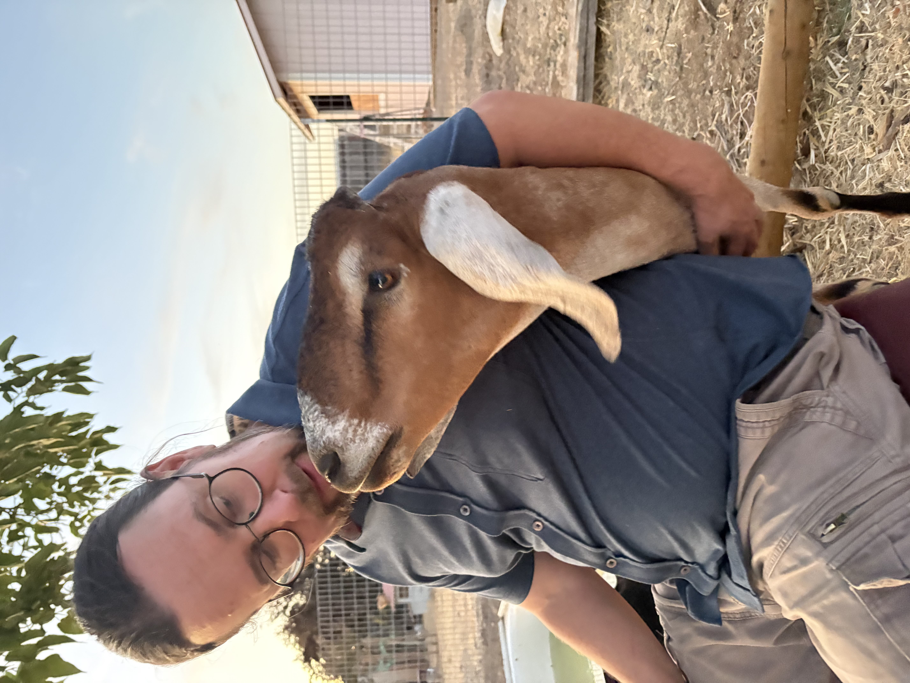

Duke
Duke was originally raised as a 4-H project before being returned to his breeder. From the moment we met him, his affectionate personality and gentle charm stole our hearts. We were thrilled to welcome him to Cookie's Cuddle Farm, where he'll spend the rest of his life surrounded by love.